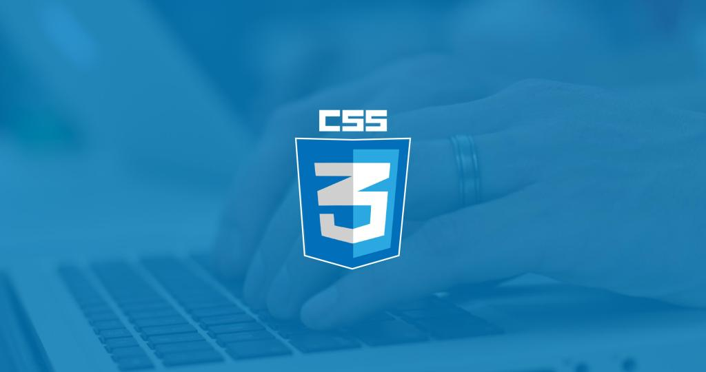

Oficialmente CSS nada tiene que ver con HTML5. CSS no es parte de la especificación y nunca lo fue. Este lenguaje es, de hecho, un complemento desarrollado para superar las limitaciones y reducir la complejidad de HTML. Al comienzo, atributos dentro de las etiquetas HTML proveían estilos esenciales para cada elemento, pero a medida que el lenguaje evolucionó, la estructura de código se volvió más compleja y HTML por sí mismo no puedo más satisfacer las demandas de diseñadores. En consecuencia, CSS pronto fue adoptado Como la forma de separar la estructura de presentación. Desde entonces, CSS ha crecido y ganó importancia, pero siempre desarrollado en paralelo, enfocado en las necesidades de los diseñadores y apartado del proceso de evolución de html.
La versión 3 de CSS sigue el mismo camino, pero esta vez con un mayor compromiso. La especificación de HTML5 fue desarrollada considerando CSS a cargo del diseño. Debido a esta consideración la integración entre HTML y CSS es ahora vital para el desarrollo web Y esta es la razón por la que cada vez que mencionamos HTML5 también estamos haciendo referencia a CSS3, aunque oficialmente se trate de dos tecnologías completamente separadas.
Introducción a CSS3
El nombre hojas de estilo en cascada viene del inglés Cascading Style Sheets, del que toma sus siglas. CSS es un lenguaje usado para definir la presentación de un documento estructurado escrito en HTML o XML (y por extensión en XHTML). El W3C(World Wide Web Consortium) es el encargado de formular la especificación de las hojas de estilo que servirán de estándar para los agentes de usuario o navegadores.
La idea que se encuentra detrás del desarrollo de CSS es separar la estructura de un documento de su presentación. La información de estilo puede ser adjuntada como un documento separado o en el mismo documento HTML. En este último caso podrían definirse estilos generales en la cabecera del documento o en cada etiqueta particular mediante el atributo.
Fuente
Estilos y estructura
A pesar de que cada navegador garantiza estilos por defecto para cada uno de los elementos HTML, estos estilos no necesariamente satisfacen los requerimientos de cada diseñador. Normalmente se encuentran muy distanciados de Io que queremos para nuestros sitios webs. Diseñadores y desarrolladores a menudo deben aplicar sus propios estilos para obtener la organización y el efecto visual que realmente desean.
Elementos Block
Con respecto a la estructura, básicamente cada navegador ordena los elementos por defecto de acuerdo a su tipo: block (bloque) o inline (en línea). Esta clasificación está asociada con la forma en que los elementos son mostrados en pantalla.
Casi todos los elementos estructurales en nuestros documentos serán tratados por los navegadores como elementos block por defecto. Esto significa que cada elemento HTML que representa una parte de la organización visual (por ejemplo, <section>, <nav>, <header>, <footer>, <div>)será posicionado debajo del anterior.
Archivos externos
Declarar los estilos en la cabecera del documento ahorra espacio y vuelve al código más consistente y actualizable, pero nos requiere hacer una copia de cada grupo de estilos en todos los documentos de nuestro sitio web. La solución es mover todos los estilos a un archivo externo y luego utilizar el elemento para insertar este archivo dentro de cada documento que los necesite. Este método nos permite cambiar los estilos por completo simplemente incluyendo un archivo diferente. También nos permite modificar o adaptar nuestros documentos a cada circunstancia o dispositivo.
Estudiamos la etiqueta <link> y cómo utilizarla para insertar archivos con estilos CSS en nuestros documentos. Utilizando la línea <link rel="stylesheet" href="misestilos.css"> le decimos al navegador que cargue el archivo misestilos .css porque contiene todos los estilos necesitados para presentar el documento en pantalla. Esta práctica fue ampliamente adoptada por diseñadores que ya están trabajando con HTML5. La etiqueta referenciando el archivo CSS será insertada en cada uno de los documentos que requieren de esos estilos.
<!DOCTYPE HTML>
<html lang="es">
<head>
<title>Titulo del documento</title>
<link rel="stylesheet" href="misestilos.css">
</head>
<body>
<p>Texto alternativo</p>
</body>
</html>
Dato: Los archivos CSS son archivos de texto comunes. Al igual que los archivos HTML, puede crearlos utilizando cualquier editor de texto como el Bloc de Notas de Windows, por ejemplo.
Referencias
Almacenar todos nuestros estilos en un archivo externo e insertar este archivo dentro de cada documento que lo necesite es muy conveniente, sin embargo no podremos hacerlo sin buenos mecanismos que nos ayuden a establecer una específica relación entre estos estilos y los elementos del documento que van a ser afectados. Cuando hablábamos sobre cómo incluir estilos en el documento, mostramos una de las técnicas utilizadas a menudo en CSS para referenciar elementos HTML. En el Listado 2-2, el estilo para cambiar el tamaño de la letra referenciaba cada elemento <p> usando la palabra clave p. De esta manera el estilo insertado entre las etiquetas <style> referenciaba cada etiqueta <p> del documento y asignaba ese estilo particular a cada una de ellas.
Existen varios métodos para seleccionar cuáles elementos HTML serán afectados por las reglas CSS:
Referenciando con palabra clave
Al declarar las reglas CSS utilizando la palabra clave del elemento afectamos cada elemento de la misma clase en el documento. Por ejemplo, la siguiente regla cambiará los estilos de todos los elementos <p>:
p { font-size: 20px }
Esta es la técnica presentada previamente en el Listado 2-2. Utilizando la palabra clave p al frente de la regla le estamos diciendo al navegador que esta regla debe ser aplicada a cada elemento <p>encontrado en el documento HTML. Todos los textos envueltos en etiquetas<p> tendrán el tamaño de 20 pixeles.
Por supuesto, lo mismo funcionará para cualquier otro elemento HTML. Si especificamos la palabra clave span en lugar de p, por ejemplo, cada texto entre etiquetas <span> tendrá un tamaño de 20 pixeles:
span { font-size: 20px }
¿Pero qué ocurre si solo necesitamos referenciar una etiqueta específica? ¿Debemos usar nuevamente el atributo style dentro de esta etiqueta? La respuesta es no. Como aprendimos anteriormente, el método de Estilos en Línea (usando el atributo style dentro de etiquetas HTML) es una técnica en desuso y debería ser evitada. Para seleccionar un elemento HTML específico desde las reglas de nuestro archivo CSS, podemos usar dos atributos diferentes: id y class.
Referenciando con el atributo id
El atributo id es como un nombre que identifica al elemento. Esto significa que el valor de este atributo no puede ser duplicado. Este nombre debe ser único en todo el documento. Para referenciar un elemento en particular usando el atributo id desde nuestro archivo CSS la regla debe ser declarada con el símbolo # al frente del valor que usamos para identificar el elemento:
#texto1 { font-size: 20px }
Listado 2-6. Referenciando a través del valor del atributo id.
La regla en el Listado 2-6 será aplicada al elemento HTML identificado con el atributo id="texto1". Ahora nuestro código HTML lucirá de esta manera:
<!DOCTYPE HTML>
<html lang="es">
<head>
<title>Titulo del documento</title>
<link rel="stylesheet" href="misestilos.css">
</head>
<body>
<p id="texto1">Texto alternativo</p>
</body>
</html>
El resultado de este procedimiento es que cada vez que hacemos una referencia usando el identificador texto1 en nuestro archivo CSS, el elemento con ese valor de id será modificado, pero el resto de los elementos <p>, o cualquier otro elemento en el mismo documento, no serán afectados.
Esta es una forma extremadamente específica de referenciar un elemento y es normalmente utilizada para elementos más generales, como etiquetas estructurales. El atributo id y su especificidad es de hecho más apropiado para referencias en Javascript.
Referenciando con el atributo class
La mayoría del tiempo, en lugar de utilizar el atributo id para propósitos de estilos es mejor utilizar class. Este atributo es más flexible y puede ser asignado a cada elemento HTML en el documento que comparte un diseño similar:
.texto1 { font-size: 20px }
Listado 2-8. Referenciando por el valor del atributo class.
Para trabajar con el atributo class, debemos declarar la regla CSS con un punto antes del nombre. La ventaja de este método es que insertar el atributo class con el valor texto1 será suficiente para asignar estos estilos a cualquier elemento que queramos:
<!DOCTYPE HTML>
<html lang="es">
<head>
<title>Titulo del documento</title>
<link rel="stylesheet" href="misestilos.css">
</head>
<body>
<p class="texto1">Texto alternativo</p>
<p class="texto1">Texto alternativo</p>
<p>Texto alternativo</p>
</body>
</html>
Listado 2-9. Asignando estilos a varios elementos a través del atributo class.
Los elementos <p> en las primeras dos líneas dentro del cuerpo del código en el Listado 2-9 tienen el atributo class con el valor texto1. Como dijimos previamente, la misma regla puede ser aplicada a diferentes elementos en el mismo documento. Por lo tanto, estos dos primeros elementos comparten la misma regla y ambos serán afectados por el estilo del Listado 2-8. El último elemento <p> conserva los estilos por defecto otorgados por el navegador
La razón por la que debemos utilizar un punto delante del nombre de la regla es que es posible construir referencias más complejas. Por ejemplo, se puede utilizar el mismo valor para el atributo class en diferentes elementos pero asignar diferentes estilos para cada tipo:
p.texto1 { font-size: 20px }
Listado 2-10. Referenciando solo elementos a través del valor del atributo class.
En el Listado 2-10 creamos una regla que referencia la clase llamada texto1 pero solo para los elementos de tipo <p>. Si cualquier otro elemento tiene el mismo valor en su atributo class no será modificado por esta regla en particular.
Fuente
Ir al Inicio De Página